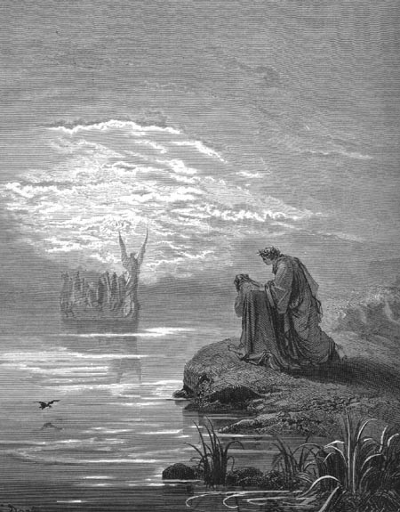

Canto IIO barqueiro do Purgatório
|
|  |
| O barqueiro trazendo almas para o Purgatório. Ilustração de Gustave Doré (século XIX). |
Ele navegou direto para a costa. O barco era veloz e tão leve que sequer agitava as águas, não deixando sinal algum de que havia passado por ali. Mais de cem almas estavam sob a guarda do piloto celestial. Elas cantavam, a uma só voz, o salmo Quando Israel saiu do Egito. Com o sinal da cruz, o anjo fez com que todas elas, de uma só vez, aparecessem na praia. Quando o barco estava vazio, ele sumiu, tão veloz como antes havia chegado.
A multidão que ficou estava confusa. Olhavam para todos os lados, como se estivessem tentando compreender alguma coisa pela primeira vez. Logo nos viram e se aproximaram pedindo:
- Se vós souberdes, mostrai-nos o caminho para o monte!
- Vós credes que somos familiares a este lugar - respondeu Virgílio -, mas somos apenas peregrinos como vós. Acabamos de chegar por outro caminho tão áspero e tão duro que escalar este monte será para nós uma brincadeira.
As almas, notando que eu respirava e que estava vivo, tornaram-se pálidas de espanto. Em pouco tempo me cercaram por todos os lados, esquecendo por um instante sua jornada. Uma delas se aproximou com os braços abertos, como se fosse me abraçar, mas, quando tentei retribuir o abraço, meus braços abraçaram o nada! Três vezes eu tentei e três vezes minhas mãos voltaram para o meu peito, atravessando aquela forma vazia com aparência enganadora. A alma então se afastou e finalmente pude reconhecê-la. Pedi que ela falasse, e ela disse:
- Assim como te amei no meu mortal corpo, ainda assim te amo sem ele. Mas o que fazes aqui, nesta hora?
- Meu amigo Casella - respondi -, aqui estou porque espero um dia aqui retornar. Mas por que demoraste tanto?
- Não posso reclamar que ele, que leva no seu barco quem deseja e quando deseja, me tenha negado várias vezes a travessia, pois a justa vontade sempre o guia - respondeu Casella -. Mas nos últimos três meses ele tem levado todos nós que desejamos atravessar. Quando eu voltei à foz do rio Tibre, lá estava aquele ser benigno que me recolheu a bordo. E foi para lá que ele agora partiu, pois é lá que ele sempre recolhe os que não caem nas margens do Aqueronte.
- Se teu novo estado não te impede a memória ou o uso do teu canto amoroso, que tanto me trouxe paz no mundo, então canta - pedi -, e consola minha alma, fatigada depois de uma viagem tão cansativa.
- "Amor que na minha mente conversa..." - começou ele a cantar docemente.
A melodia nos hipnotizou. Virgílio, eu, e todas aquelas almas estávamos tão contentes que nada mais nos veio à mente. Atentos à música de Casella sequer vimos o velho Catão se aproximar, mas ao chegar ele gritou:
- Que é que é isso, espíritos preguiçosos? Quanta negligência estardes aqui folgados, perdendo o vosso precioso tempo! Correi logo ao monte para livrar-vos da sujeira do mundo que vos oculta a vista de Deus!
Logo que o velho se calou, vi aquele bando sair correndo na direção da ladeira, como quem vai sem saber aonde. E a nossa partida não foi menos ligeira.